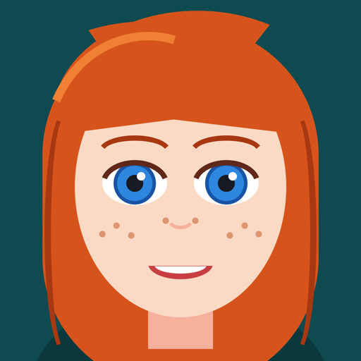

Fotobuňka v telefonu: selfie, nové vousy, brýle nebo účes a pak ty v různých stylech. Appka je v uzavřeném testování.
A photo booth on your phone: a selfie, a new beard, glasses or haircut, then you in many styles. In closed testing.